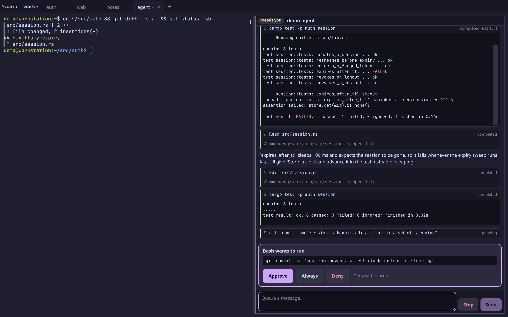
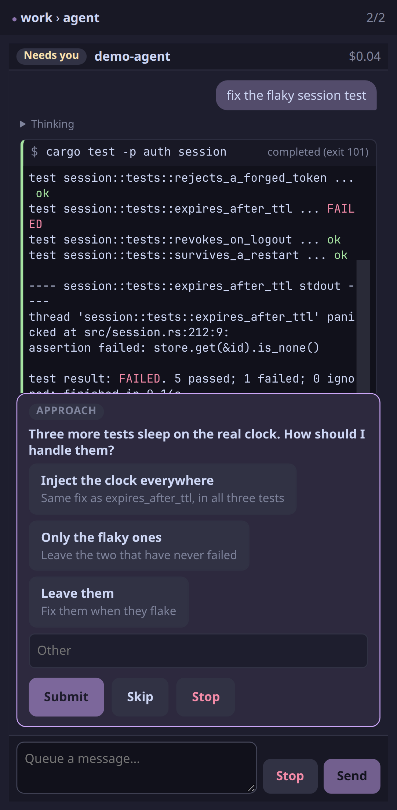
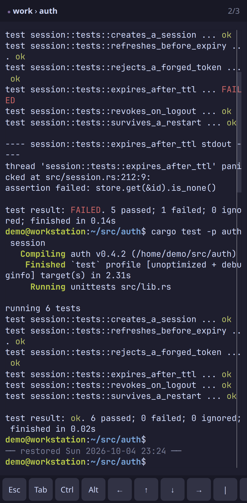
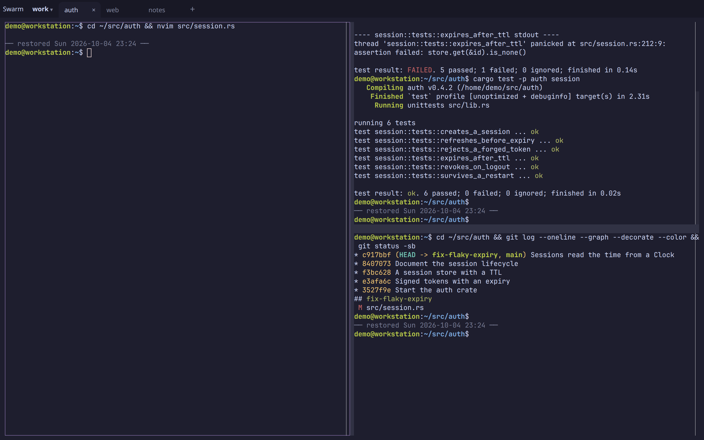
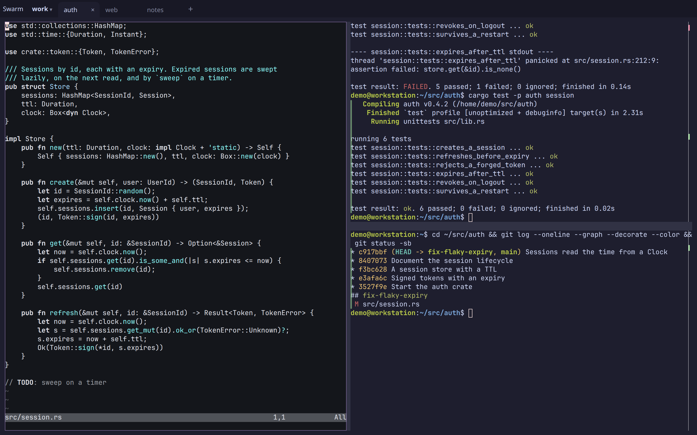
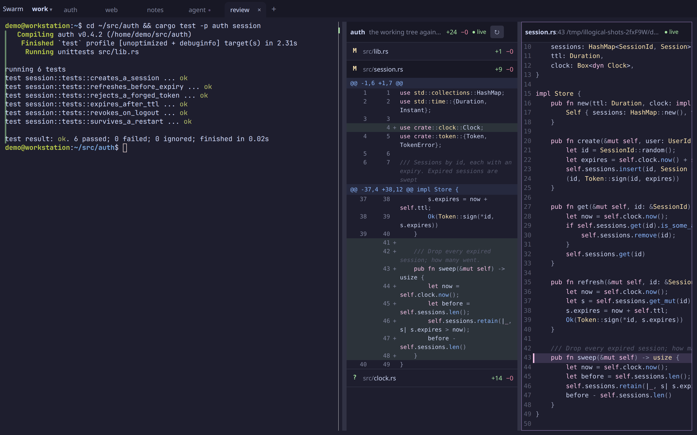
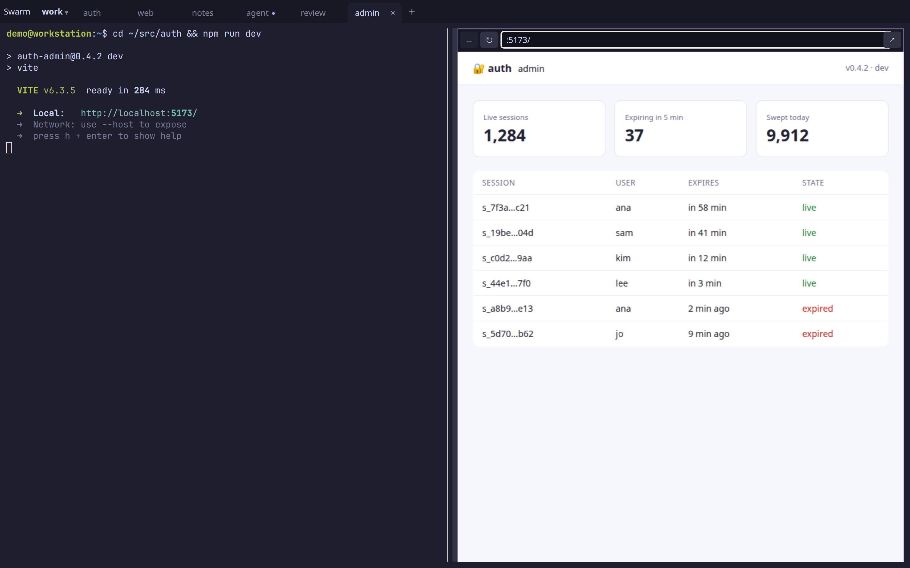
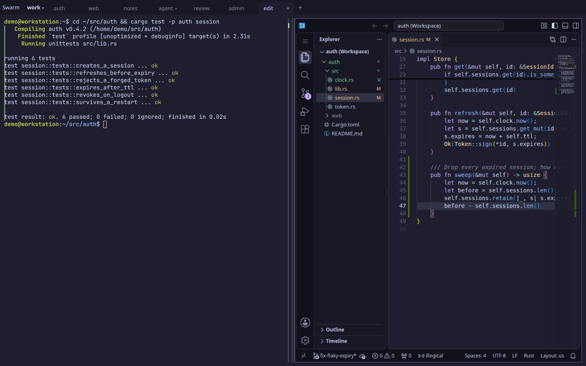
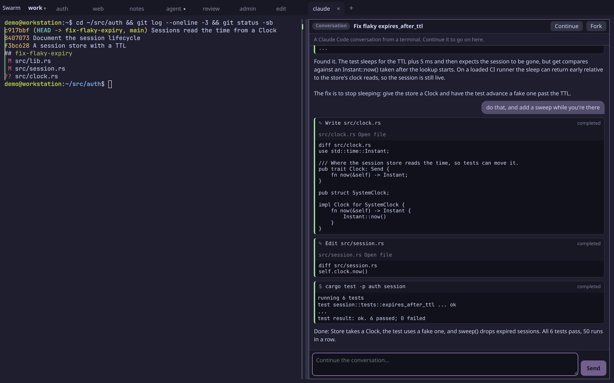

Answer from anywhere.
Questions and approval requests appear in one view. See which agents are waiting and answer from your laptop or phone.
See which agents need input and what your teammates are working on. Leave unfinished work open, come back later, or join a teammate’s session to help.
Intel Mac: .zip · Linux: AppImage · .deb · Windows: installer · servers, without a screen
free and open source · the app sets up everything it needs

Every session on every machine you can see, grouped by project, machine or person. Busy sessions drift to the middle.
Start a task with Claude Code or Codex and come back to it later. Zoom into a project and every session is still there, with its output.
Questions and approval requests lift out to one rail. Whoever answers first is named on the card.
Click a tile and you’re in the session: the agent, its commands and their results, live.
Questions and approval requests appear in one view. See which agents are waiting and answer from your laptop or phone.


Your sessions run on the host machine, independently of your browser. Reopen the workspace to see your terminals and their output.

See what your teammates are working on and join a shared session to pair, answer an agent or help with a stuck task. You control who can view or interact with your sessions.

A terminal is one kind of block. The things you'd switch windows for open beside the pane they're about, in the same tabs and splits, on the same machine, and they come back after a restart. Changes and conversations work as soon as it's installed; dev servers and VS Code are opt-in, because each needs a web origin of its own (how to turn them on).

Changes opens a diff block for the pane's repository: each file with its +/−, its hunks a tap away. Tap a line for the file, marked there. Both follow the edits as they land, and nothing in them can write, so checking an agent's work from your phone is safe.

npm run dev in a pane, then open its port: the app sits next to the terminal, hot reload and all. Each block is its own origin, so the page can't reach illogical. When the server dies the block says so, and the page comes back with it. One daemon flag turns it on for the browser on that machine; from your phone, it also needs a domain of yours.

Open in editor starts VS Code on the pane's machine, at the file and line, with your settings and extensions kept, and it sleeps when nobody has it open. It's shown like a dev server, so it's turned on the same way.

Any Claude Code session on the machine, from a terminal or the desktop app, opens as a block: prompts, replies, every tool call and its output. Follow one from your phone as it runs, then Continue it right there, with your settings and skills, or Fork it if it's still open somewhere else.
And more: web pages (illogical open example.com), panes from your other machines in this layout, drawn straight from their host, and your own VS Code, Cursor or nvim as tiles in the swarm, with the debugger's stops as cards. Every kind shares the layout, the illogical CLI and the rail of what needs you.
Unzip it and drag illogical to Applications. It isn't notarized yet: the first time, open it, then choose Open Anyway in System Settings › Privacy & Security.
Or, in Terminal, curl -fsSL https://illogical.widgets.wtf/install.sh | sh installs the app with no Open Anyway step, along with its service and the CLI, and opens it.
The AppImage runs as is (chmod +x it first); the .deb puts it in your apps. Either needs Ubuntu 22.04, Debian 12, Fedora 36 or newer.
Panes run PowerShell, and the app reaches every machine in your account too. It isn't signed yet: when SmartScreen stops it, choose More info, then Run anyway.
The first time it opens, the app installs illogicald, the background service that keeps terminals running when windows close, and the illogical CLI. Then Getting started puts it on your phone, in the cloud and in Claude Code: a click each.
No desktop? Install the service from a terminal, then open it from a browser on your phone or another machine.
curl -fsSL https://illogical.widgets.wtf/install.sh | sh
Installs illogical and starts its background service (on a Mac at its screen, the app too; sh -s -- --no-app leaves it out). Run again to upgrade.
irm https://illogical.widgets.wtf/install.ps1 | iex
The same, started at logon as a scheduled task. Run again to upgrade.
brew tap arugula-salad/tap brew install illogical illogicald install
git clone https://github.com/arugula-salad/illogical cd illogical just bootstrap && just install
On macOS, the Xcode command line tools too.
On a server, Getting started's steps are commands: tailscale serve --bg --https=443 http://127.0.0.1:7681 for your phone, illogicald join https://control.illogical.widgets.wtf for the cloud, and claude mcp add illogical -- illogical mcp for Claude Code.
The quickstart covers the rest, and advanced setup covers throwaway VMs per tab, dev servers beside their terminals, more machines, and iTerm2 as a tmux client.
illogical control is the hosted service behind Getting started's cloud step. Sign in with GitHub or a passkey, add each machine with illogicald join, and open any of them from your phone, another browser or the desktop app, with or without a tailnet.
Keeps your account, your devices and your machines, introduces them to each other, and relays between them when they can't connect directly. Teams share machines the same way.
What your terminals say. Every connection between a device and a machine is encrypted end to end, relayed ones included, and a new device gets in only when one you already have approves it.
Nothing while illogical is in beta. It's provided as is, without an uptime promise; if pricing comes, it's announced before it applies. Or run your own: it's one binary in the repository.
How control works, and running your own · Open control · Privacy · Terms